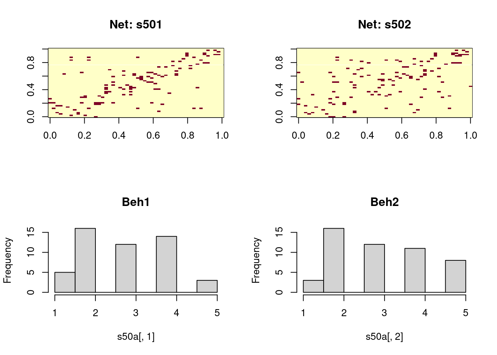
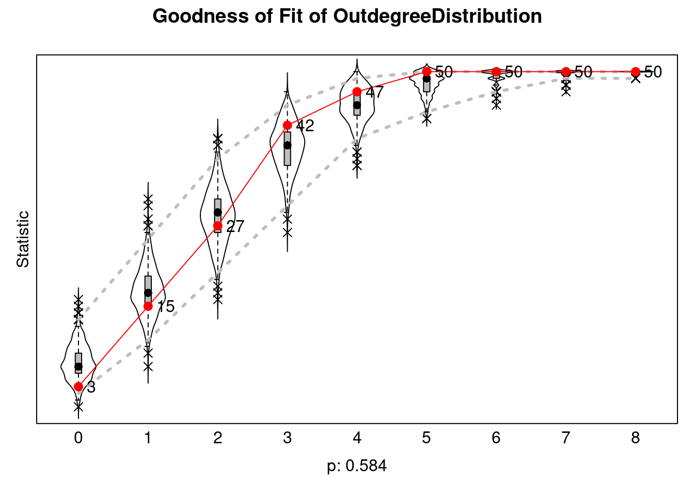
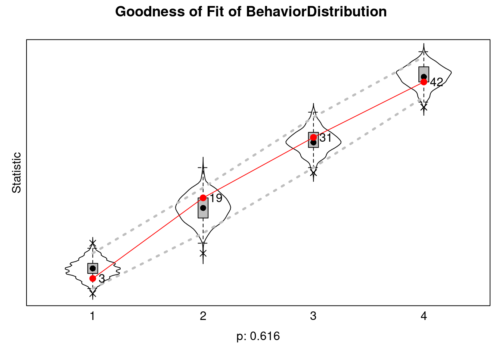

## Simulating data
n <- 1000
time <- 2
theta <- c(-1, 3)
## Sampling a bernoilli network
set.seed(3132)
p <- 0.01
X <- matrix(rbinom(n^2, 1, p), nrow = n)
diag(X) <- 0
## Covariate
W <- matrix(rnorm(n), nrow = n)
## Simulating the outcome
rho <- 0.5
Y0 <- cbind(rnorm(n))
## The lagged exposure
expo <- (X %*% Y0)/rowSums(X)
Y1 <- theta[1] + rho * expo + W * theta[2] + rnorm(n)4 Behavior and coevolution
4.1 Introduction
This section focuses on inference involving network and a secondary outcome. While there are many ways of studying the coevolution or dependence between network and behavior, this section focuses on two classes of analysis: When the network is fixed and when both network and behavior influence each other.
Whether we treat the network as given or endogenous sets the complexity of conducting statistical inference. Data analysis becomes much more straightforward if our research focuses on individual-level outcomes embedded in a network and not on the network itself. Here, we will deal with three particular cases: (1) when network effects are lagged, (2) egocentric networks, and (3) when network effects are contemporaneous.
4.2 Lagged exposure
If we assume that network influence in the form of exposure is lagged, we have one of the most straightforward cases for network inference (Haye et al. 2019; Valente and Vega Yon 2020; Valente, Wipfli, and Vega Yon 2019). Here, instead of dealing with convoluted statistical models, the problem reduces to estimating a simple linear regression model. Generally, lagged exposure effects look like this:
y_{it} = \rho \left(\sum_{j\neq i}X_{ij}\right)^{-1}\left(\sum_{j\neq i}y_{jt-1} X_{ij}\right) + {\bm{{\theta}}}^{\mathbf{t}}\bm{{w_i}} + \varepsilon,\quad \varepsilon \sim \text{N}(0, \sigma^2)
where y_{it} is the outcome of individual i at time t, X_{ij} is the ij-th entry of the adjacency matrix, \bm{{\theta}} is a vector of coefficients, \bm{{w_i}} is a vector of features/covariates of individual i, and \varepsilon_i is a normally distributed error. Here, the key component is \rho: the coefficient associated with the network exposure effect.
The exposure statistic, \left(\sum_{j\neq i}X_{ij}\right)^{-1}\left(\sum_{j\neq i}y_{jt-1} X_{ij}\right), is the weighted average of i’s neighbors’ outcomes at time t-1.
4.3 Code example: Lagged exposure
The following code example shows how to estimate a lagged exposure effect using the glm function in R. The model we will simulate and estimate features a Bernoulli graph with 1,000 nodes and a density of 0.01.
y_{it} = \theta_1 + \rho \text{Exposure}_{it} + \theta_2 w_i + \varepsilon
where \text{Exposure}_{it} is the exposure statistic defined above, and w_i is a vector of covariates.
Now we fit the model using GLM, in this case, linear Regression
fit <- glm(Y1 ~ expo + W, family = "gaussian")
summary(fit)
Call:
glm(formula = Y1 ~ expo + W, family = "gaussian")
Coefficients:
Estimate Std. Error t value Pr(>|t|)
(Intercept) -1.07187 0.03284 -32.638 < 2e-16 ***
expo 0.61170 0.10199 5.998 2.8e-09 ***
W 3.00316 0.03233 92.891 < 2e-16 ***
---
Signif. codes: 0 '***' 0.001 '**' 0.01 '*' 0.05 '.' 0.1 ' ' 1
(Dispersion parameter for gaussian family taken to be 1.071489)
Null deviance: 10319.3 on 999 degrees of freedom
Residual deviance: 1068.3 on 997 degrees of freedom
AIC: 2911.9
Number of Fisher Scoring iterations: 24.4 Egocentric networks
Generally, when we use egocentric networks and egos’ outcomes, we are thinking in a model where one observation is the pair (y_i, X_i), this is, the outcome of individual i and the egocentric network of individual i. When such is the case, since (a) networks are independent across egos and (b) the networks are fixed, like the previous case, a simple linear regression model is enough to conduct the analyses. A typical model looks like this:
\bm{{y}} = \bm{{\theta}}_{x}^{\mathbf{t}}s(\bm{{X}}) + \bm{{\theta}}^{\mathbf{t}}\bm{{w}} + \varepsilon,\quad \varepsilon \sim \text{N}(0, \sigma^2)
Where \bm{{y}} is a vector of outcomes, \bm{{X}} is a matrix of egocentric networks, \bm{{w}} is a vector of covariates, \bm{{\theta}} is a vector of coefficients, and \varepsilon is a vector of errors. The key component here is s(\bm{{X}}), which is a vector of sufficient statistics of the egocentric networks. For example, if we are interested in the number of ties, s(\bm{{X}}) is a vector of the number of ties of each ego.
4.5 Code example: Egocentric networks
For this example, we will simulate a stream of 1,000 Bernoulli graphs looking into the probability of school dropout. Each network will have between 4 and 10 nodes and have a density of 0.4. The data-generating process is as follows:
{\Pr{}}_{\bm{{\theta}}}\left(Y_i=1\right) = \text{logit}^{-1}\left(\bm{{\theta}}_x s(\bm{{X}}_i) \right)
Where s(X) \equiv \left(\text{density}, \text{n mutual ties}\right), and \bm{{\theta}}_x = (0.5, -1). This model only features sufficient statistics. We start by simulating the networks
set.seed(331)
n <- 1000
sizes <- sample(4:10, n, replace = TRUE)
## Simulating the networks
X <- lapply(sizes, function(x) matrix(rbinom(x^2, 1, 0.4), nrow = x))
X <- lapply(X, \(x) {diag(x) <- 0; x})
## Inspecting the first 5
head(X, 5)[[1]]
[,1] [,2] [,3] [,4] [,5]
[1,] 0 1 1 1 0
[2,] 0 0 0 0 0
[3,] 0 1 0 0 0
[4,] 0 0 0 0 0
[5,] 1 0 0 1 0
[[2]]
[,1] [,2] [,3] [,4]
[1,] 0 0 0 0
[2,] 0 0 0 0
[3,] 0 0 0 0
[4,] 1 0 1 0
[[3]]
[,1] [,2] [,3] [,4] [,5] [,6]
[1,] 0 1 0 1 0 0
[2,] 0 0 0 0 0 0
[3,] 0 1 0 0 0 1
[4,] 0 0 0 0 1 0
[5,] 0 0 0 0 0 0
[6,] 0 0 0 0 0 0
[[4]]
[,1] [,2] [,3] [,4] [,5]
[1,] 0 1 0 1 0
[2,] 0 0 0 0 1
[3,] 0 1 0 0 0
[4,] 0 1 1 0 1
[5,] 1 0 1 0 0
[[5]]
[,1] [,2] [,3] [,4] [,5]
[1,] 0 0 0 0 0
[2,] 1 0 0 0 0
[3,] 1 0 0 0 0
[4,] 0 0 0 0 0
[5,] 1 0 0 0 0Using the ergm R package (Handcock et al. 2023; Hunter et al. 2008), we can extract the associated sufficient statistics of the egocentric networks:
library(ergm)
stats <- lapply(X, \(x) summary_formula(x ~ density + mutual))
## Turning the list into a matrix
stats <- do.call(rbind, stats)
## Inspecting the first 5
head(stats, 5) density mutual
[1,] 0.3000000 0
[2,] 0.1666667 0
[3,] 0.1666667 0
[4,] 0.4500000 0
[5,] 0.1500000 0We now simulate the outcomes
y <- rbinom(n, 1, plogis(stats %*% c(0.5, -1)))
glm(y ~ stats, family = binomial(link = "logit")) |>
summary()
Call:
glm(formula = y ~ stats, family = binomial(link = "logit"))
Coefficients:
Estimate Std. Error z value Pr(>|z|)
(Intercept) 0.07319 0.41590 0.176 0.860
statsdensity 0.42568 1.26942 0.335 0.737
statsmutual -1.14804 0.12166 -9.436 <2e-16 ***
---
Signif. codes: 0 '***' 0.001 '**' 0.01 '*' 0.05 '.' 0.1 ' ' 1
(Dispersion parameter for binomial family taken to be 1)
Null deviance: 768.96 on 999 degrees of freedom
Residual deviance: 518.78 on 997 degrees of freedom
AIC: 524.78
Number of Fisher Scoring iterations: 74.6 Network effects are endogenous
Here we have two different approaches: Spatial Autocorrelation [SAR], and Autologistic actor attribute model [ALAAM] (Robins, Pattison, and Elliott 2001). The first one is a generalization of the linear regression model that accounts for spatial dependence. The second is a close relative of ERGMs that treats covariates as endogenous and network as exogenous. Overall, ALAAMs are more flexible than SARs, but SARs are easier to estimate.
SAR Formally, SAR models (see LeSage 2008) can be used to estimate network exposure effects. The general form is:
\bm{{y}} = \rho \bm{{W}} \bm{{y}} + \bm{{\theta}}^{\mathbf{t}} \bm{{X}} + \epsilon,\quad \epsilon \sim \text{MVN}(0, \Sigma)
where \bm{{y}}\equiv \{y_i\} is a vector of outcomes the outcome, \rho is an autocorrelation coefficient, \bm{{W}} \in \{w_{ij}\} is a row-stochastic square matrix of size n, \bm{{\theta}} is a vector of model parameters, \bm{{X}} is the corresponding matrix with exogenous variables, and \epsilon is a vector of errors that distributes multivariate normal with mean 0 and covariance make\Sigma.[^notation] The SAR model is a generalization of the linear regression model that accounts for spatial dependence. The SAR model can be estimated using the spatialreg package in R (Roger Bivand 2022).
Tip
What is the appropriate network to use in the SAR model? According to LeSage and Pace (2014), it is not very important. Since (I_n - \rho \mathbf{W})^{-1} = \rho \mathbf{W} + \rho^2 \mathbf{W}^2 + \dots.
Although the SAR model was developed for spatial data, it is easy to apply it to network data. Furthermore, each entry of the vector \bm{{Wy}} has the same definition as network exposure, namely
\bm{{Wy}} \equiv \left\{\sum_{j}y_j w_{ij}\right\}_i
Since \bm{{W}} is row-stochastic, \bm{{Wy}} is a weighted average of the outcome of the neighbors of i, i.e., a vector of network exposures.
ALAAM The simplest way we can think of this class of models is as if a given covariate switched places with the network in an ERGM, so the network is now fixed and the covariate is the random variable. While ALAAMs can also estimate network exposure effects, we can use them to build more complex models beyond exposure. The general form is:
\Pr\left(\bm{{Y}} = \bm{{y}}|\bm{{W}},\bm{{X}}\right) = \exp{\left(\bm{{\theta}}^{\mathbf{t}}s(\bm{{y}},\bm{{W}}, \bm{{X}})\right)}\times\eta(\bm{{\theta}})^{-1}
\eta(\bm{{\theta}}) = \sum_{\bm{{y}}}\exp{\left(\bm{{\theta}}^{\mathbf{t}}s(\bm{{y}},\bm{{W}}, \bm{{X}})\right)}
Where \bm{{Y}}\equiv \{y_i \in (0, 1)\} is a vector of binary individual outcomes, \bm{{W}} denotes the social network, \bm{{X}} is a matrix of exogenous variables, \bm{{\theta}} is a vector of model parameters, s(\bm{{y}},\bm{{W}}, \bm{{X}}) is a vector of sufficient statistics, and \eta(\bm{{\theta}}) is a normalizing constant.
4.7 Code example: SAR
Simulation of SAR models can be done using the following observation: Although the outcome shows on both sides of the equation, we can isolate it in one side and solve for it; formally:
\bm{{y}} = \rho \bm{{X}} \bm{{y}} + \bm{{\theta}}^{\mathbf{t}}\bm{{W}} + \varepsilon \implies \bm{{y}} = \left(\bm{{I}} - \rho \bm{{X}}\right)^{-1}\bm{{\theta}}^{\mathbf{t}}\bm{{W}} + \left(\bm{{I}} - \rho \bm{{X}}\right)^{-1}\varepsilon
The following code chunk simulates a SAR model with a Bernoulli graph with 1,000 nodes and a density of 0.01. The data-generating process is as follows:
set.seed(4114)
n <- 1000
## Simulating the network
p <- 0.01
X <- matrix(rbinom(n^2, 1, p), nrow = n)
## Covariate
W <- matrix(rnorm(n), nrow = n)
## Simulating the outcome
rho <- 0.5
library(MASS) # For the mvrnorm function
## Identity minus rho * X
X_rowstoch <- X / rowSums(X)
I <- diag(n) - rho * X_rowstoch
## The outcome
Y <- solve(I) %*% (2 * W) + solve(I) %*% mvrnorm(1, rep(0, n), diag(n))Using the spatialreg R package, we can fit the model using the lagsarlm function:
library(spdep) # for the function mat2listw
library(spatialreg)
fit <- lagsarlm(
Y ~ W,
data = as.data.frame(X),
listw = mat2listw(X_rowstoch)
)## Using texreg to get a pretty print
texreg::screenreg(fit, single.row = TRUE)
========================================
Model 1
----------------------------------------
(Intercept) -0.01 (0.03)
W 1.97 (0.03) ***
rho 0.54 (0.04) ***
----------------------------------------
Num. obs. 1000
Parameters 4
Log Likelihood -1373.02
AIC (Linear model) 2920.37
AIC (Spatial model) 2754.05
LR test: statistic 168.32
LR test: p-value 0.00
========================================
*** p < 0.001; ** p < 0.01; * p < 0.05The interpretation of this model is almost the same as a linear regression, with the difference that we have the autocorrelation effect (rho). As expected, the model got an estimate close enough to the population parameter: \rho = 0.5.
4.8 Code example: ALAAM
To date, there is no R package implementing the ALAAM framework. Nevertheless, you can fit ALAAMs using the PNet software developed by the Melnet group at the University of Melbourne (click here).
Because of the similarities, ALAAMs can be implemented using ERGMs. Because of the novelty of it, the coding example will be left as a potential class project. We will post a fully-featured example after the workshop.
4.9 Coevolution
Finally, we discuss coevolution when both network and behavior are embedded in a feedback loop. Coevolution should be the default assumption when dealing with social networks. Nevertheless, models capable of capturing coevolution are hard to estimate. Here, we will discuss two of such models: Stochastic Actor-Oriented Models (or Siena Models) (first introduced in T. a. B. Snijders (1996); see also T. A. B. Snijders (2017)) and Exponential-family Random Exponential-family Random Network Models [ERNMs,] a generalization of ERGMs (Wang, Fellows, and Handcock 2023; Fellows 2012).
Siena Stochastic Actor-Oriented Models [SOAMs] or Siena Models are dynamic models of network and behavior that describe the transition of a network system within two or more time points.
ERNMs This model is closely related to ERGMs, with the difference that they incorporate a vertex-level output. Conceptually, it is moving from a having a random network, to a model where a given vertex feature and network are random:
P_{\mathcal{Y}, \bm{{\theta}}}(\bm{{Y}}=\bm{{y}}|\bm{{X}}=\bm{{x}}) \to P_{\mathcal{Y}, \bm{{\theta}}}(\bm{{Y}}=\bm{{y}}, \bm{{X}}=\bm{{x}})
4.10 Code example: Siena
This example was adapted from the RSiena R package (see ?sienaGOF-auxiliary page).We start by loading the package and taking a look at the data we will use:
library(RSiena)
## Visualizing the adjacency matrix & behavior
op <- par(mfrow=c(2, 2))
image(s501, main = "Net: s501")
image(s502, main = "Net: s502")
hist(s50a[,1], main = "Beh1")
hist(s50a[,2], main = "Beh2")
par(op)The next step is the data preparation process. RSiena does not receive raw data as is. We need to explicitly declare the networks and outcome variable. Siena models can also model network changes
## Initializing the dependent variable (network)
mynet1 <- sienaDependent(array(c(s501, s502), dim=c(50, 50, 2)))
mynet1Type oneMode
Observations 2
Nodeset Actors (50 elements)mybeh <- sienaDependent(s50a[,1:2], type="behavior")
mybehType behavior
Observations 2
Nodeset Actors (50 elements)## Node-level covariates (artificial)
mycov <- c(rep(1:3,16),1,2)
## Edge-level covariates (also artificial)
mydycov <- matrix(rep(1:5, 500), 50, 50) ## Creating the data object
mydata <- sienaDataCreate(mynet1, mybeh)
## Adding the effects (first get them!)
myeff <- getEffects(mydata)
## Notice that Siena adds some default effects
myeff
## name effectName include fix test initialValue parm
## 1 mynet1 basic rate parameter mynet1 TRUE FALSE FALSE 4.69604 0
## 2 mynet1 outdegree (density) TRUE FALSE FALSE -1.48852 0
## 3 mynet1 reciprocity TRUE FALSE FALSE 0.00000 0
## 4 mybeh rate mybeh period 1 TRUE FALSE FALSE 0.70571 0
## 5 mybeh mybeh linear shape TRUE FALSE FALSE 0.32247 0
## 6 mybeh mybeh quadratic shape TRUE FALSE FALSE 0.00000 0
## Adding a few extra effects (automatically prints them out)
myeff <- includeEffects(myeff, transTies, cycle3)
## effectName include fix test initialValue parm
## 1 3-cycles TRUE FALSE FALSE 0 0
## 2 transitive ties TRUE FALSE FALSE 0 0To add more effects, first, call the function effectsDocumentation(myeff). It will show you explicitly how to add a particular effect. For instance, if we wanted to add network exposure (avExposure,) under the documentation of effectsDocumentation(myeff) we need to pass the following arguments:
## And now, exposure effect
myeff <- includeEffects(
myeff,
avExposure,
# These last three are specified by effectsDocum...
name = "mybeh",
interaction1 = "mynet1",
type = "rate"
) effectName include fix test initialValue parm
1 average exposure effect on rate mybeh TRUE FALSE FALSE 0 0 The next step involves creating the model with (sienaAlgorithmCreate,) where we specify all the parameters for fitting the model (e.g., MCMC steps.) Here, we modified the values of n3 and nsub to half of the default values to reduce the time it would take to fit the model; yet this degrades the quality of the fit.
## Shorter phases 2 and 3, just for example:
myalgorithm <- sienaAlgorithmCreate(
nsub = 2, n3 = 500, seed = 122, projname = NULL
)
## If you use this algorithm object, siena07 will create/use an output file Siena.txt .
## Fitting and printing the model
ans <- siena07(
myalgorithm,
data = mydata, effects = myeff,
returnDeps = TRUE, batch = TRUE
)
##
## Start phase 0
## theta: 4.696 -1.489 0.000 0.000 0.000 0.706 0.000 0.322 0.000
##
## Start phase 1
## Phase 1 Iteration 1 Progress: 0%
## Phase 1 Iteration 2 Progress: 0%
## Phase 1 Iteration 3 Progress: 0%
## Phase 1 Iteration 4 Progress: 0%
## Phase 1 Iteration 5 Progress: 0%
## Phase 1 Iteration 10 Progress: 1%
## Phase 1 Iteration 15 Progress: 1%
## Phase 1 Iteration 20 Progress: 1%
## Phase 1 Iteration 25 Progress: 2%
## Phase 1 Iteration 30 Progress: 2%
## Phase 1 Iteration 35 Progress: 2%
## Phase 1 Iteration 40 Progress: 3%
## Phase 1 Iteration 45 Progress: 3%
## Phase 1 Iteration 50 Progress: 3%
## theta: 5.380 -1.734 0.481 0.147 0.166 1.168 -0.340 0.250 0.140
##
## Start phase 2.1
## Phase 2 Subphase 1 Iteration 1 Progress: 33%
## Phase 2 Subphase 1 Iteration 2 Progress: 33%
## theta 6.044 -1.877 0.840 0.300 0.473 1.096 -0.332 0.112 0.191
## ac 0.375 -0.183 3.835 4.574 23.412 0.922 0.908 0.626 3.302
## Phase 2 Subphase 1 Iteration 3 Progress: 33%
## Phase 2 Subphase 1 Iteration 4 Progress: 33%
## theta 6.1075 -2.0372 1.2512 0.0341 0.5207 1.2593 -0.1534 0.3018 0.1928
## ac 0.9859 0.2280 -0.0703 -2.2973 -2.7455 1.1518 1.0749 0.8732 0.5399
## Phase 2 Subphase 1 Iteration 5 Progress: 33%
## Phase 2 Subphase 1 Iteration 6 Progress: 33%
## theta 6.8650 -2.3185 1.7577 0.2694 0.7636 1.1997 -0.0433 0.3000 0.1762
## ac 0.4789 0.4883 0.0199 -1.9449 -2.2609 1.1444 1.0397 0.9282 0.6470
## Phase 2 Subphase 1 Iteration 7 Progress: 33%
## Phase 2 Subphase 1 Iteration 8 Progress: 33%
## theta 6.801140 -2.485273 1.966471 0.301197 0.817324 1.228010 0.000627 0.377719 0.072274
## ac 0.4538 0.4933 -0.0158 -1.9326 -2.2588 1.1102 1.0395 0.9239 0.6905
## Phase 2 Subphase 1 Iteration 9 Progress: 33%
## Phase 2 Subphase 1 Iteration 10 Progress: 33%
## theta 6.1258 -2.5124 1.8704 0.1206 0.6054 1.4538 -0.0145 0.5091 -0.0671
## ac 0.472 0.103 -0.330 -1.625 -1.991 1.152 1.090 0.767 0.514
## Phase 2 Subphase 1 Iteration 1 Progress: 33%
## Phase 2 Subphase 1 Iteration 2 Progress: 33%
## Phase 2 Subphase 1 Iteration 3 Progress: 33%
## Phase 2 Subphase 1 Iteration 4 Progress: 33%
## Phase 2 Subphase 1 Iteration 5 Progress: 33%
## Phase 2 Subphase 1 Iteration 6 Progress: 34%
## Phase 2 Subphase 1 Iteration 7 Progress: 34%
## Phase 2 Subphase 1 Iteration 8 Progress: 34%
## Phase 2 Subphase 1 Iteration 9 Progress: 34%
## Phase 2 Subphase 1 Iteration 10 Progress: 34%
## theta 6.4976 -2.5900 1.9265 0.2750 0.8543 1.0420 0.0446 0.3234 -0.0686
## ac -0.212 -0.697 -0.818 -0.831 -0.765 -0.442 -0.268 -0.240 -0.267
## theta: 6.4976 -2.5900 1.9265 0.2750 0.8543 1.0420 0.0446 0.3234 -0.0686
##
## Start phase 2.2
## Phase 2 Subphase 2 Iteration 1 Progress: 48%
## Phase 2 Subphase 2 Iteration 2 Progress: 48%
## Phase 2 Subphase 2 Iteration 3 Progress: 48%
## Phase 2 Subphase 2 Iteration 4 Progress: 48%
## Phase 2 Subphase 2 Iteration 5 Progress: 48%
## Phase 2 Subphase 2 Iteration 6 Progress: 48%
## Phase 2 Subphase 2 Iteration 7 Progress: 49%
## Phase 2 Subphase 2 Iteration 8 Progress: 49%
## Phase 2 Subphase 2 Iteration 9 Progress: 49%
## Phase 2 Subphase 2 Iteration 10 Progress: 49%
## theta 6.7988 -2.5810 1.9335 0.3941 0.7843 1.1111 0.0358 0.3252 -0.0415
## ac -0.0757 -0.3672 -0.4025 -0.3676 -0.4157 -0.0166 0.0222 -0.0874 0.0651
## theta: 6.7988 -2.5810 1.9335 0.3941 0.7843 1.1111 0.0358 0.3252 -0.0415
##
## Start phase 3
## Phase 3 Iteration 500 Progress 100%
ans
## Estimates, standard errors and convergence t-ratios
##
## Estimate Standard Convergence
## Error t-ratio
## Network Dynamics
## 1. rate basic rate parameter mynet1 6.7988 ( 1.2496 ) -0.0460
## 2. eval outdegree (density) -2.5810 ( 0.1505 ) 0.0113
## 3. eval reciprocity 1.9335 ( 0.2627 ) 0.0205
## 4. eval 3-cycles 0.3941 ( 0.2742 ) -0.0658
## 5. eval transitive ties 0.7843 ( 0.2379 ) -0.0014
##
## Behavior Dynamics
## 6. rate rate mybeh period 1 1.1111 ( 1.3096 ) -0.0199
## 7. rate average exposure effect on rate mybeh 0.0358 ( 0.4373 ) -0.0190
## 8. eval mybeh linear shape 0.3252 ( 0.2329 ) -0.0048
## 9. eval mybeh quadratic shape -0.0415 ( 0.1139 ) 0.0992
##
## Overall maximum convergence ratio: 0.2163
##
##
## Total of 940 iteration steps.As a rule of thumb, absolute t-values below 0.1 show good convergence, below 0.2 we say “reasonably well,” and above is no convergence. Let’s highlight two of the effects we have in our model
Transitive ties (number five) are positive 0.78 with a t-value of smaller than 0.01. Thus, we say that the network has a tendency towards transitivity (balance) that is significant.
Exposure effect (number seven) is also positive, but small, 0.03, but still significant (t-value of -0.01)
:Like with ERGMs, we also do goodness-of-fit:
sienaGOF(ans, OutdegreeDistribution, varName="mynet1") |>
plot()
sienaGOF(ans, BehaviorDistribution, varName = "mybeh") |>
plot()Note: some statistics are not plotted because their variance is 0.
This holds for the statistic: 5.
4.11 Code example: ERNM
To date, there is no CRAN release for the ERNM model. The only implementation I am aware of is one of the leading authors, which is available on GitHub: https://github.com/fellstat/ernm. Unfortunately, the current version of the package seems to be broken.
Just like the ALAAM case, as ERNMs are closely related to ERGMS, building an example using the ERGM package could be a great opportunity for a class project!